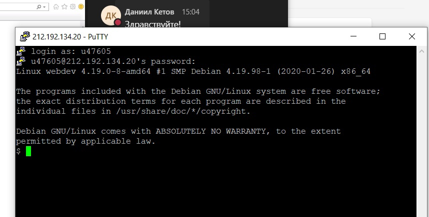
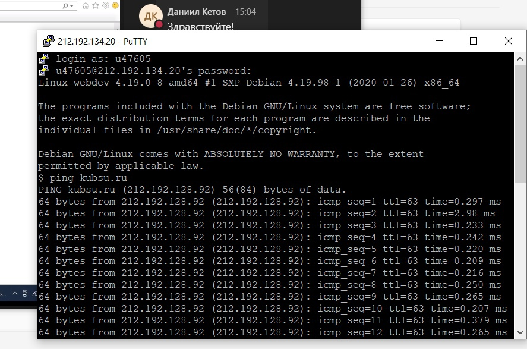
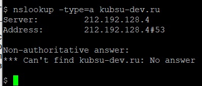
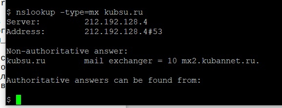
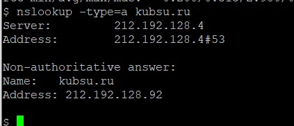
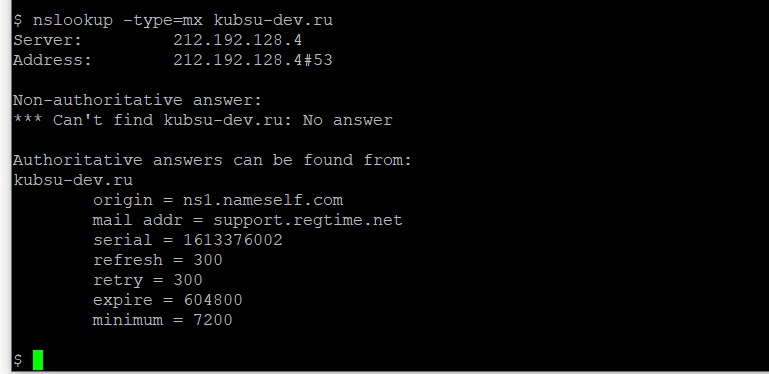
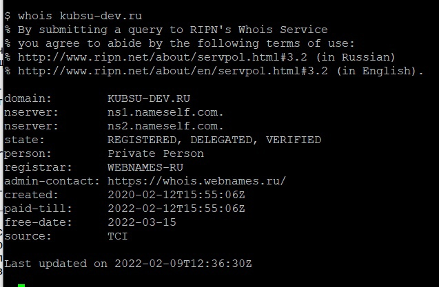
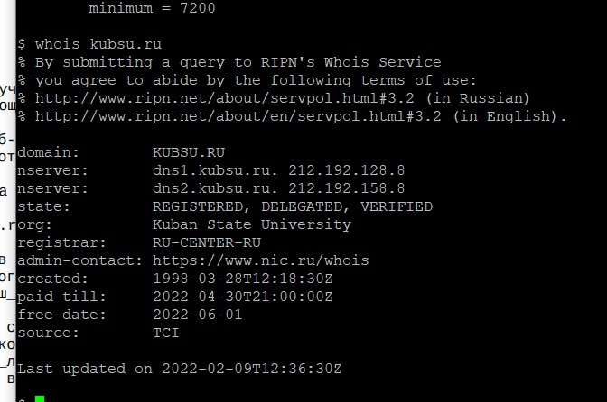
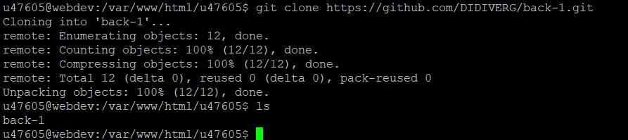
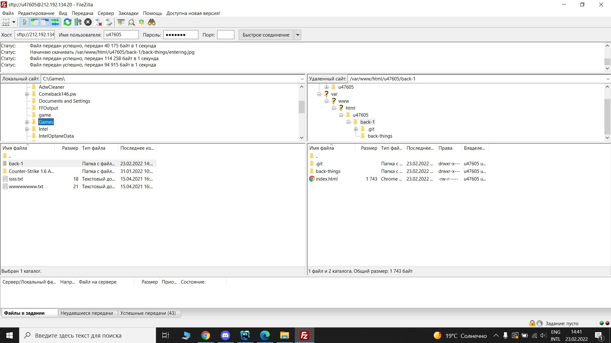

Putty и вход в аккаунт
Ping: Проверяет подключение на уровне IP к другому компьютеру TCP/IP, отправляя сообщения эхо-запросов протокола ICMP. Отображаются сообщения о получении соответствующих эхо-ответов, а также время кругового пути.
Lookup: Команда nslookup — инструмент сетевого администрирования для запросов в доменной системе имен (DNS) с целью получения доменного имени, IP-адреса или другой информации из записей DNS.
nslookup -type=A, где A = адресная запись
nslookup -type=MX, где MX = почтовый шлюз и приоритет
   Whois: показывает на каких DNS находится домен, дату оплаты и регистрации домена, а также статус домена
 Клонирование гит-репозитория в папку по SHH
Подключение и получение данных с удаленного сервера по FTP запросу
